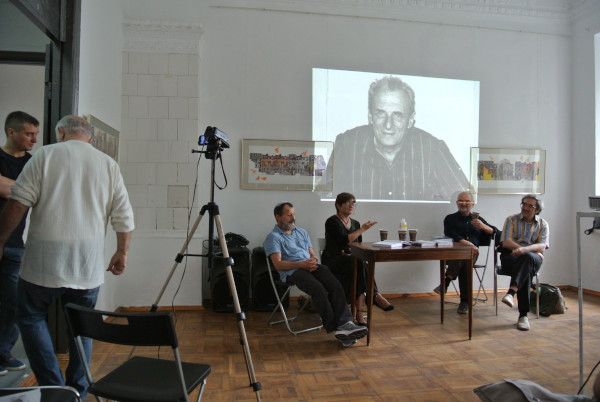
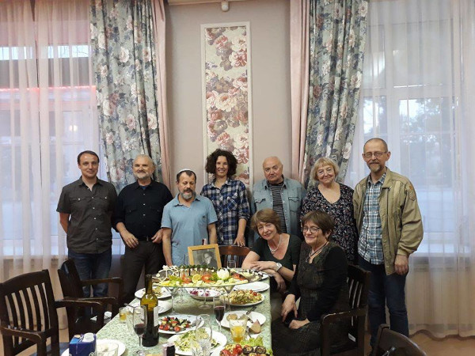

3-4 ИЮЛЯ 2018 ГОДА В КИЕВЕ СОСТОЯЛИСЬ
ЮБИЛЕЙНЫЕ МЕРОПРИЯТИЯ В ЧЕСТЬ
100-ЛЕТНЕГО ЮБИЛЕЯ
ВЛАДИМИРА СОЛОМОНОВИЧА БИБЛЕРА:
КРУГЛЫЕ СТОЛЫ, ПОСВЯЩЕННЫЕ НАСЛЕДИЮ БИБЛЕРА И
ПРЕЗЕНТАЦИЯ СБОРНИКА ЕГО РАБОТ
НА УКРАИНСКОМ ЯЗЫКЕ

фото Евгения Ямкового

фото Евгения Ямкового
Презентация книги В.С. Библера “Культура. Діалог культур”. Участники: И.Берлянд, А.Волынец, С.Копылов, А.Ахутин, А.Сигов и др.
Круглый стол. Наследие В.С. Библера и современность
Часть 1. Философия
Анатолий Волынец (США). Зачем читать Библера или что такое "дух времени"?
Светлана Неретина (Россия). О взаимопонимании
Вадим Розин (Россия). В.С.Библер и Г.П.Щедровицкий: две стратегии построения новой философии
Сергей Копылов (Киев). "Еще раз о сознании и мышлении (на полях работы Библера)"
Юрий Троицкий (Россия). Проективные понятия как предмет философской рефлексии. (Записи нет)
Павел Тищенко (Россия) "Поэзия и поэтика В.С. Библера"
Часть 2. Школа диалога культур
Анатолий Волынец (США). Предопределения Школы диалога культур
Юрий Троицкий (Россия). Мастер-класс "Школа понимания: от Диалога культур к диалогу в Культуре" (Записи нет)
съемка Артема Глаголева-Пальяна